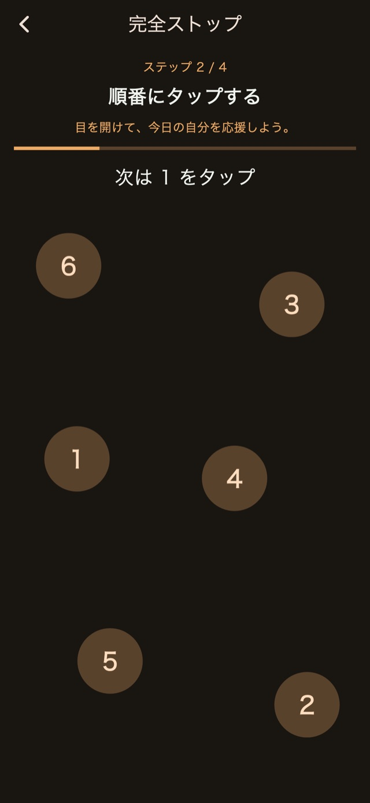
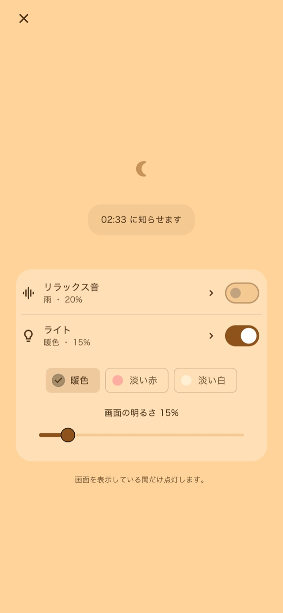

雨や波の音を、好きな音量で。
雨・波・ホワイトノイズの3種類。最初のお知らせに向けて音が小さくなり、振動が始まるまでに止まります。
01振動パターン
普段の通知とは違う、長さもリズムも変わる振動。「いつもと違う」という違和感を、目を覚ますきっかけに。
振動の長さや間隔を変えながら、いろいろなパターンを組み合わせます。「おまかせ」「通知風中心」「長め中心」「短め中心」の4種類から選べます。
振動のリズムのイメージ
アプリで振動を試してから、好みのパターンを選べます。
02複数回のお知らせ
何個もアラームを作る手間を減らせます。今回のお知らせを止めて次の回を待つことも、起きたら残りをまとめて終了することもできます。
回数と間隔の変更はプレミアムで利用できます。
セットから終了までのイメージ
起きたら全体を終了
回数を3回に設定した場合のイメージ。
03停止操作
計算、数字の順番タップ、長押し、連打。アラームを止めるときに、頭と手を使う操作を用意しています。
標準の停止・スヌーズは無料。解除方法の変更や組み合わせの編集はプレミアムです。

使い方・ナイト画面
ナイト画面では、明るさや時計の見え方を調整できます。表示を消して待ち、タップしたときだけ時計を表示することもできます。
「30分後」などの時間ボタン、または起きたい時刻でセット。
画面を暗くして待機。音やライトは、使いたいときだけオンに。
停止操作を進め、不要になった残りのお知らせを終了。
ナイト画面の音とライト
仮眠や寝かしつけのおともに。ナイト画面から、必要なときだけオンにできます。
雨・波・ホワイトノイズの3種類。最初のお知らせに向けて音が小さくなり、振動が始まるまでに止まります。
授乳や夜中のお世話にも。暖色・淡い赤・淡い白から選んで、画面の明るさを調整できます。
リラックス音もライトも、無料で使えます。

無料とプレミアム
まずは振動や停止操作を試して、細かく調整したくなったらプレミアムへ。
| 機能 | 無料 | プレミアム |
|---|---|---|
| 基本4種類の振動 | 使えます | 使えます |
| 複数回のお知らせ | 標準設定 | 回数・間隔を変更 |
| 停止・スヌーズの操作 | 標準の操作 | 手順を変更・組み合わせ |
| ナイト画面・音・ライト | 使えます | 使えます |
| 自作の振動パターン | — | 作成・編集 |
| 広告 | 一部の画面に表示 | すべて非表示 |
プレミアムは月額・買い切りから選べます。料金はアプリ内の購入画面でご確認ください。月額は自動更新で、ストアの設定から管理・解約できます。
よくある質問
アプリ独自の振動パターンを使うには、ナイト画面を開いたまま待機してください。ロック中や他のアプリを使っている間はiOS側の制御になり、選んだ振動パターンや強さは適用されません。
アラームは音の代わりに振動で知らせる設計です。リラックス音は自分でオンにしたときだけ再生します。振動が机や寝具に伝わる音、端末設定による動作の違いはあるため、使う場所と端末で事前にお試しください。
基本4種類の振動、標準の複数回アラーム、停止・スヌーズ、ナイト画面、リラックス音、ライトを利用できます。回数や間隔、停止手順の変更、自作パターン、広告の非表示はプレミアムです。
アプリ専用のアカウント登録は不要です。設定や予定は端末に保存します。広告・解析・購入に関するデータの扱いは、プライバシーポリシーをご確認ください。
アプリの案内に沿って必要な権限を許可し、「権限・動作確認」で試してください。Androidでは端末の省電力設定も動作に影響する場合があります。通知の到達や起床を保証するものではありません。
ダウンロード
仮眠・寝かしつけ用の振動アラーム。
基本無料・アプリ内課金あり
iPhone：iOS 26.1以降 / Android：8.0以降
アプリは日本語・英語を含む20言語に対応